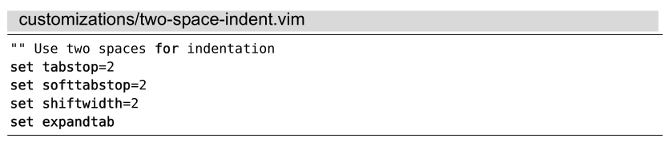

）。在加载文件时，Vim会把每一行文本当作Ex命令加以执行，就好像在Vim命令行上执行它们一样。
）。在加载文件时，Vim会把每一行文本当作Ex命令加以执行，就好像在Vim命令行上执行它们一样。A.2将配置信息存至vimrc文件
动态改变Vim的设置项非常有用，但假设你已经定制了某些特别中意的选项，如果能让它们固定下来的话，肯定更方便吧？
我们可以将定制化的选项写入文件，加以保存。此后，我们可以通过:source {file}命令，将指定{file}中的设置项应用于当前的编辑会话（参见:h :source）。在加载文件时，Vim会把每一行文本当作Ex命令加以执行，就好像在Vim命令行上执行它们一样。
假设我们经常编辑缩进两个空格的文件，就可以创建一个包含特定选项的文件，并将其保存至磁盘：

每当我们想在当前缓冲区应用这些配置项时，可以运行这条命令：
➾ :source two-space-indent.vim
当我们动态改变这些设置项时，要先输入一个冒号切换至命令行模式。但当这些设置项被保存至文件后，就没有必要在前面添加冒号了，因为:source命令会把文件的每一行都当成Ex命令，让Vim执行。
当Vim启动时，会检查名为vimrc的文件是否存在。如果Vim找到了该文件，会在启动时自动加载其所有内容。通过这种机制，我们可以将喜爱的定制选项保存至vimrc文件中，这样一来，每当Vim启动时，都会应用这些选项。
Vim会在许多地方查找vimrc文件（参见:h vimrc）。在Unix系统中，Vim希望能找到路径为~/.vimrc的文件。在Windows系统中，理想的文件路径为$HOME/_vimrc。无论你运行的是哪种系统，都可以通过以下命令在Vim的内部打开该文件：
➾ :edit $MYVIMRC
$MYVIMRC是Vim的一个环境变量，它将被扩展为vimrc的文件路径。在完成针对vimrc文件的改动后，可以通过以下命令为当前的Vim会话加载新的配置选项：
➾ :source $MYVIMRC
如果vimrc文件恰好是当前活动的缓冲区，则可把此命令简化为 :so %。